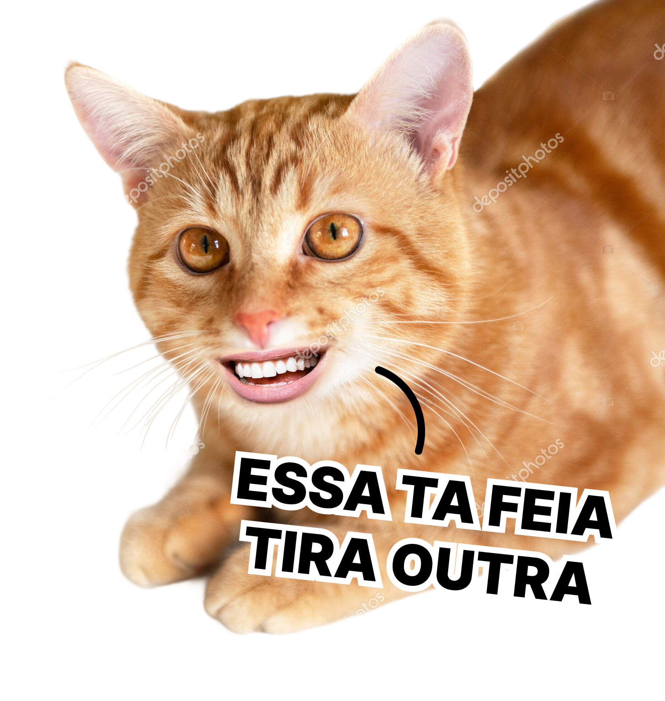

Registre momentos com esses efeitos meia boca, salve suas fotos e poste onde vc quiser (ou deixa guardado para o esquecimento...)

Ao vivo
Registre momentos com esses efeitos meia boca, salve suas fotos e poste onde vc quiser (ou deixa guardado para o esquecimento...)
